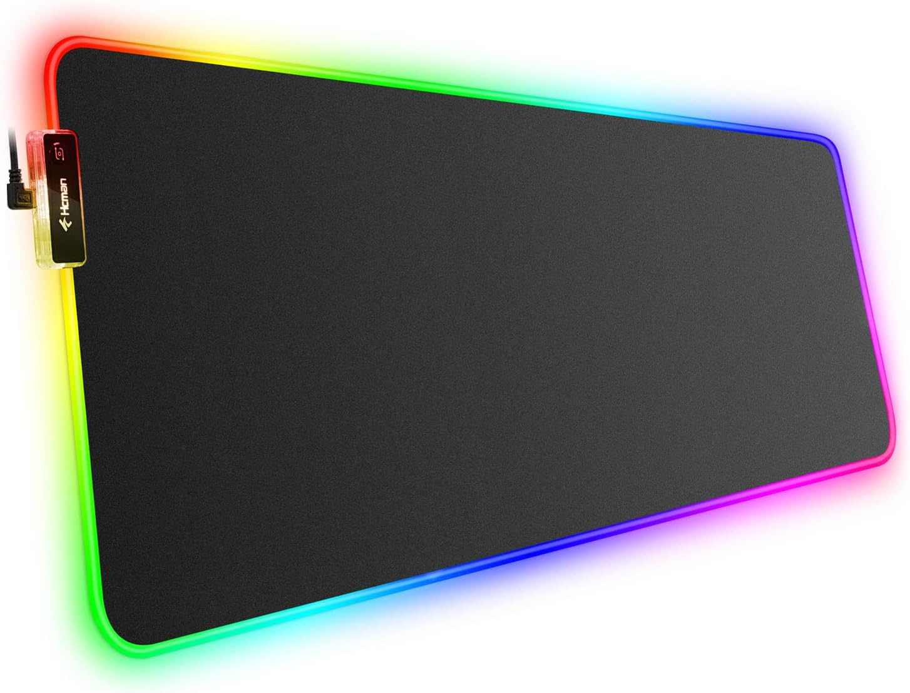

🔥 Produtos em Destaque
Os melhores periféricos gamer com entrega rápida!

Mouse Gamer RGB
Mouse com alta precisão, iluminação RGB e ideal para jogos competitivos.
Adicionar ao carrinho
Teclado Mecânico
Teclado com switches mecânicos, alta durabilidade e resposta rápida.
Adicionar ao carrinho
Headset Gamer 7.1
Áudio surround 7.1, microfone com cancelamento de ruído e conforto extremo.
Adicionar ao carrinho
Mousepad Gamer XL
Superfície otimizada para controle e velocidade, tamanho XL para máximo conforto.
Adicionar ao carrinho📰 Últimas Notícias
Mercado gamer cresce 30% no Brasil em 2026
O mercado de produtos gamers continua em expansão no Brasil em 2026. Com o aumento do número de jogadores, a procura por periféricos como teclados mecânicos, mouses de alta precisão e monitores de alta taxa de atualização cresceu significativamente.
Especialistas indicam: A tendência é de crescimento contínuo nos próximos anos, com foco em produtos nacionais de qualidade.
Saiba Mais